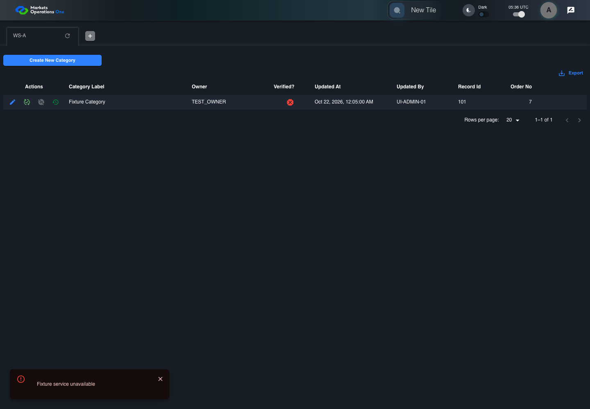

All canonical cases
AUTH-131: Render an API string error as user-visible text Business acceptance remains unverified. Owner: unknown. Review the canonical definition and fixture limits before acceptance.
Latest local result: PASS Business acceptance: NOT_ESTABLISHED.
The latest local result describes execution. The historical definition review assesses the case design before execution.
Latest step screenshot bindings: COMPLETE . 8/8 canonical steps have execution screenshots.
Bindings measure structural coverage only. They do not establish screenshot content quality or relevance.
Screenshot content review: NOT_REVIEWED . Recorded context does not establish human visual review.
Canonical Gherkin definition . Definition version: 2. SHA-256: 45ac2b5a5f4da9be17470e338ece6db6c3b19fc3385b7739ef1a31773e1412b5.
Historical definition review (preflight): UNVERIFIED A definition review FAIL can coexist with local PASS. The definition failed preflight quality checks.
This historical review does not change the latest execution result. Resolve definition gaps before business acceptance.
Canonical Gherkin steps Feature: BFF boundary
@AUTH-131
Scenario: Render an API string error as user-visible text
Given User A is authenticated as user-a in an isolated browser context
And the selected fixture tab is labelled "WS-A" inside the tablist named "workspaces" on the Home page
And User A has entity FMO PORTAL ADMIN with owner role TEST_OWNER
And the Category editor shows fixture record 101 in the dialog titled "edit ID: 101" on the administration page
And the Category update POST returns plain text "Fixture service unavailable"
When User A clicks the button labelled "Update" inside the dialog titled "edit ID: 101" on the administration page
Then the alert in the portal notification area displays exactly "Fixture service unavailable"
And the application global isLoading state equals false Acceptance and evidence limits: NO_COMPLETE_REAL_APPLICATION_BINDING, CANONICAL_REVIEW_OR_EVIDENCE_UNRESOLVED.
Planned essential canonical frames: 2. Plan completeness requires separate review.
Latest attempt AUTH-131 Category update response handling with step evidence PASS · application/run-050/auth-131-category-update-response-handling-with-step-evidence-42d838af2e70-attempt-1 · ACTUAL_APPLICATION_LOCAL_SERVICES
Actual Category editor and Axios response handler. Controlled login supplies user-a with TEST_OWNER. Controlled update responses establish frontend error handling only. BFF authorization and storage are not verified.
2026-10-22T05:58:50.395Z to 2026-10-22T05:58:52.961Z
Assertions and result · Artifact manifest · Exact run inputs and source hashes
Result SHA-256: b3a977ba97160a01b67a65b3dec07c79eb4deff1b864b7cddb23f584a4330386 Playwright trace
Machine observations Screenshot capture: CAPTURED. Named frames: 9.
Step screenshot bindings: COMPLETE. 8/8 canonical steps have execution screenshots.
Bindings measure structural coverage only. They do not establish screenshot content quality or relevance.
Screenshot content review: NOT_REVIEWED . Recorded context: 0/9 frames. Identical image bytes: 4 repeated frames. Recorded context does not establish human visual review.
Canonical step timeline Given User A is authenticated as user-a in an isolated browser context
1. step-01 Visible state after step 1: Given User A is authenticated as user-a in an isolated browser context
2026-10-22T05:58:51.430Z · 1440×1000a552094a4f46b1a02346ca1970bbb0a91bfe2d8fae8e94d76f3f14e380997e6e And the selected fixture tab is labelled "WS-A" inside the tablist named "workspaces" on the Home page
2. step-02 Visible state after step 2: And the selected fixture tab is labelled "WS-A" inside the tablist named "workspaces" on the Home page
2026-10-22T05:58:51.477Z · 1440×1000a552094a4f46b1a02346ca1970bbb0a91bfe2d8fae8e94d76f3f14e380997e6e Image bytes match frame 1. An unchanged image can be valid for consecutive assertions. This match does not establish correct step content.
And User A has entity FMO PORTAL ADMIN with owner role TEST_OWNER
3. step-03 Visible state after step 3: And User A has entity FMO PORTAL ADMIN with owner role TEST_OWNER
2026-10-22T05:58:51.510Z · 1440×1000a552094a4f46b1a02346ca1970bbb0a91bfe2d8fae8e94d76f3f14e380997e6e Image bytes match frame 2. An unchanged image can be valid for consecutive assertions. This match does not establish correct step content.
And the Category editor shows fixture record 101 in the dialog titled "edit ID: 101" on the administration page
4. step-04 Visible state after step 4: And the Category editor shows fixture record 101 in the dialog titled "edit ID: 101" on the administration page
2026-10-22T05:58:52.460Z · 1440×100098bb899f7a0a22cf9ce968005e7528e3f51b3bbd89dc3b7d01688a0ecdb938a1 And the Category update POST returns plain text "Fixture service unavailable"
5. step-05 Visible state after step 5: And the Category update POST returns plain text "Fixture service unavailable"
2026-10-22T05:58:52.515Z · 1440×100011474ce5e9871da7744689d64c5d9cbc974e1146c04b863de0ed99bcedd12ab9 When User A clicks the button labelled "Update" inside the dialog titled "edit ID: 101" on the administration page
6. step-06 Visible state after step 6: When User A clicks the button labelled "Update" inside the dialog titled "edit ID: 101" on the administration page
2026-10-22T05:58:52.643Z · 1440×1000a024aad347f8d4c56365fd71acf4deb0b34de8b62895c82119b10cd499f9f9d5 Then the alert in the portal notification area displays exactly "Fixture service unavailable"
7. step-07 Visible state after step 7: Then the alert in the portal notification area displays exactly "Fixture service unavailable"
2026-10-22T05:58:52.678Z · 1440×10004f8ab699abd2cefd41b62d0f1aeef6fb07461bf29e548e54d194f8d8e53dba1f And the application global isLoading state equals false
8. step-08 Visible state after step 8: And the application global isLoading state equals false
2026-10-22T05:58:52.709Z · 1440×1000a024aad347f8d4c56365fd71acf4deb0b34de8b62895c82119b10cd499f9f9d5 Image bytes match frame 6. An unchanged image can be valid for consecutive assertions. This match does not establish correct step content.
Additional named frames 9. final-result The final visible state after the named test assertions.
2026-10-22T05:58:52.779Z · 1440×1000a024aad347f8d4c56365fd71acf4deb0b34de8b62895c82119b10cd499f9f9d5 Image bytes match frame 8. An unchanged image can be valid for consecutive assertions. This match does not establish correct step content.
Screenshots establish visible state only. Assertions and traces support functional claims.
Earlier attempt history (1) Earlier attempt PASS (superseded by latest PASS) AUTH-131 Category update response handling with step evidence PASS · application/run-027/auth-131-category-update-response-handling-with-step-evidence-42d838af2e70-attempt-1 · ACTUAL_APPLICATION_LOCAL_SERVICES
Actual Category editor and Axios response handler. Controlled login supplies user-a with TEST_OWNER. Controlled update responses establish frontend error handling only. BFF authorization and storage are not verified.
2026-10-22T05:36:26.525Z to 2026-10-22T05:36:29.111Z
Assertions and result · Artifact manifest · Exact run inputs and source hashes
Result SHA-256: eb74bf0364e6a47f5660b5af6e0601a9db68003038fd42108159474af740e8b4 Playwright trace
Machine observations Screenshot capture: CAPTURED. Named frames: 9.
Step screenshot bindings: COMPLETE. 8/8 canonical steps have execution screenshots.
Bindings measure structural coverage only. They do not establish screenshot content quality or relevance.
Screenshot content review: NOT_REVIEWED . Recorded context: 0/9 frames. Identical image bytes: 5 repeated frames. Recorded context does not establish human visual review.
Canonical step timeline Given User A is authenticated as user-a in an isolated browser context
1. step-01 Visible state after step 1: Given User A is authenticated as user-a in an isolated browser context
2026-10-22T05:36:27.394Z · 1440×10008743b9334381fc5621329286aa042e2b6e99b7a64db5bff3b716a3f9659f9080 And the selected fixture tab is labelled "WS-A" inside the tablist named "workspaces" on the Home page
2. step-02 Visible state after step 2: And the selected fixture tab is labelled "WS-A" inside the tablist named "workspaces" on the Home page
2026-10-22T05:36:27.442Z · 1440×10008743b9334381fc5621329286aa042e2b6e99b7a64db5bff3b716a3f9659f9080 Image bytes match frame 1. An unchanged image can be valid for consecutive assertions. This match does not establish correct step content.
And User A has entity FMO PORTAL ADMIN with owner role TEST_OWNER
3. step-03 Visible state after step 3: And User A has entity FMO PORTAL ADMIN with owner role TEST_OWNER
2026-10-22T05:36:27.474Z · 1440×10008743b9334381fc5621329286aa042e2b6e99b7a64db5bff3b716a3f9659f9080 Image bytes match frame 2. An unchanged image can be valid for consecutive assertions. This match does not establish correct step content.
And the Category editor shows fixture record 101 in the dialog titled "edit ID: 101" on the administration page
4. step-04 Visible state after step 4: And the Category editor shows fixture record 101 in the dialog titled "edit ID: 101" on the administration page
2026-10-22T05:36:28.440Z · 1440×100004bd3def78b38ed018f84f4670f26f34f1ad1842a38d495761c8481b8c390111 And the Category update POST returns plain text "Fixture service unavailable"
5. step-05 Visible state after step 5: And the Category update POST returns plain text "Fixture service unavailable"
2026-10-22T05:36:28.483Z · 1440×1000851535892ab1e505e9ab9ca60eeea416d330771e4c7f14128b7c6ad3f79a5064 When User A clicks the button labelled "Update" inside the dialog titled "edit ID: 101" on the administration page

6. step-06 Visible state after step 6: When User A clicks the button labelled "Update" inside the dialog titled "edit ID: 101" on the administration page
2026-10-22T05:36:28.644Z · 1440×1000e5c8de9e968a832a008678230d54eb123b2a79ffe833b09a195447718074b538 Then the alert in the portal notification area displays exactly "Fixture service unavailable"
7. step-07 Visible state after step 7: Then the alert in the portal notification area displays exactly "Fixture service unavailable"
2026-10-22T05:36:28.687Z · 1440×1000e5c8de9e968a832a008678230d54eb123b2a79ffe833b09a195447718074b538 Image bytes match frame 6. An unchanged image can be valid for consecutive assertions. This match does not establish correct step content.
And the application global isLoading state equals false
8. step-08 Visible state after step 8: And the application global isLoading state equals false
2026-10-22T05:36:28.832Z · 1440×1000e5c8de9e968a832a008678230d54eb123b2a79ffe833b09a195447718074b538 Image bytes match frame 7. An unchanged image can be valid for consecutive assertions. This match does not establish correct step content.
Additional named frames 9. final-result The final visible state after the named test assertions.
2026-10-22T05:36:28.913Z · 1440×1000e5c8de9e968a832a008678230d54eb123b2a79ffe833b09a195447718074b538 Image bytes match frame 8. An unchanged image can be valid for consecutive assertions. This match does not establish correct step content.
Screenshots establish visible state only. Assertions and traces support functional claims.